Voice is a natural interface for AI agents, and many of the places where a voice agent is useful, such as meetings, households and collaborative work, are inherently multi-speaker. MSI-Bench (Multi-Speaker Interaction Benchmark) evaluates a voice assistant in exactly these settings. Each test case is a short multi-party, multi-turn audio scene with two to four speakers, a system prompt that names no one, expected tool calls and atomic rubrics. The benchmark targets three capability families: multi-speaker memory, multi-speaker instruction following and multi-speaker reasoning. The cases are evenly split between Mandarin Chinese and English.
The assistant must tell the speakers apart by voice alone, learn who may authorize what from how people talk, keep a whispered secret from the others, pick up a fact said far away on the phone, attribute interleaved constraints to the right person, weigh a hard constraint against a soft wish and decide when to answer at all. The scenes are grounded in situation-rich seeds and include a full-duplex floor layer: backchannels, interruptions, cut tails and earlier assistant turns in the assistant's own voice. Each case below shows the heard audio, the lanes, the transcript, the system prompt, the gold and the rubric.